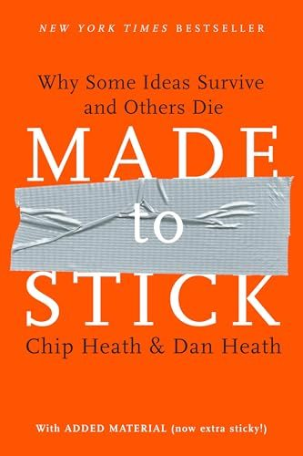

Library › Psychology & People
The Power of Moments — Summary & Key Lessons

Why certain experiences have extraordinary impact — and how to build peaks instead of fixing potholes.
📖 OPEN THE FULL INTERACTIVE BREAKDOWN →🌐 Read it in Hindi, Hinglish, Gujarati, Tamil & 22 more languages — free, with audio.
💡 The Big Idea
Memory doesn't record experience like video — it keeps highlights: the PEAK-END RULE means we judge whole experiences by their best/worst moment and their ending, while duration barely registers ('duration neglect'). This changes design entirely: a mostly-fine experience with one magical peak beats a flawlessly average one, and organizations obsessed with fixing potholes (reducing complaints) systematically underinvest in building PEAKS (creating delight). Defining moments share four ingredients: ELEVATION (sensory richness, raised stakes, breaking the script — the Magic Castle Hotel's Popsicle Hotline turns a mediocre property into TripAdvisor royalty), INSIGHT ('tripping over the truth' — engineered self-discovery beats being told; 'crystallized discontent' powers change), PRIDE (recognize others far more than feels natural — recognition is the most underused leadership tool; multiply milestones so progress is celebrated en route), and CONNECTION (shared struggle and deepened ties — groups bond in synchronized meaningful moments, and relationships deepen through responsiveness: understanding + validation + caring). The practice: spot the transitions, pits, and peaks-in-waiting everyone else treats as ordinary — first days, endings, anniversaries — and build ceremony where life is already listening.
🧠 The 6 Key Lessons
Lesson 1: Peaks Beat Potholes: The Magic Castle Math
Chapters 1-3: Elevation
Customer-experience budgets flow overwhelmingly to complaint-reduction — but the peak-end rule says memories are made at maxima, not averages. The Heaths' formula for building peaks: BOOST SENSORY APPEAL (make it look/feel/taste different than ordinary), RAISE THE STAKES (competition, deadlines, public performance add voltage), BREAK THE SCRIPT (violate expectations strategically — surprise is memory glue). The trap they name is 'reasonableness': every peak proposal gets sanded down by practicality (the Popsicle Hotline sounds ridiculous in a budget meeting) until what ships is defensibly forgettable. Fix the pits, yes — then deliberately fund the ridiculous peak, because that's the only part anyone will retell.
📖 Example: The Magic Castle Hotel: a converted LA apartment complex — small rooms, dated decor — that outranks five-star palaces on TripAdvisor. Why: a cherry-red poolside phone answered 'Popsicle Hotline' — free popsicles delivered poolside on silver trays by… Read the full example →
⚡ Do this: Map your customer/user journey and mark: the pit (fix it to neutral, no further), and the moment with peak potential. Then design one 'unreasonable' peak there — small cost, high surprise — and ship it before the sanding committee finds it.
Lesson 2: Trip Over the Truth, Stretch for Insight
Chapters 4-6: Insight
Telling people a truth produces nodding; engineering them to DISCOVER it produces conversion. 'Tripping over the truth' has a recipe: a clear insight, compressed in time, discovered by the audience themselves (the CLTS sanitation program didn't lecture villages about germs — a facilitated walk made residents SEE the contamination path to their own food; open defecation ended village by village where decades of aid posters failed). The personal version: growth lives where knowledge can't be transferred, only earned — so 'stretch for insight': place yourself where failure is possible and informative (the psychology of self-insight: we learn who we are by testing, not introspecting). Mentors accelerate it with HIGH STANDARDS + ASSURANCE + DIRECTION + SUPPORT — the formula that turns stretch from terrifying to transformative.
📖 Example: Scott Guthrie, Microsoft VP, inherited Azure when developers hated it. Instead of reading reports (being told), he ran a 'trip': flew his top engineers to an offsite and made them BUILD an app on their own platform — executives watching their own product… Read the full example →
⚡ Do this: Pick a truth your team/family/client keeps nodding at but not acting on. Design the trip: an experience where they encounter the evidence themselves within minutes (use the product cold, visit the customer, audit their own output). Schedule it this month; say nothing in advance.
Lesson 3: Multiply Milestones, Manufacture Connection
Chapters 7-12: Pride & Connection
PRIDE moments are shamefully cheap and chronically underproduced: recognition research shows the #1 reason people don't praise more is simply not thinking of it — so systematize it (specific, personal, timely beats employee-of-the-month theater), and MULTIPLY MILESTONES: long goals demotivate because the finish line is distant; insert celebrated checkpoints (the couch-to-5K structure, the level-up, the first-client bell) so progress pays along the way. CONNECTION peaks come from two sources: SHARED STRUGGLE (groups bond in demanding synchronized moments — which is why bland team-building fails and hard shared missions work) and RESPONSIVENESS in relationships — the research-backed trio of understanding ('I get you'), validation ('you matter'), caring ('I've got you') — deployed at life's transitions, where humans are most open: first days, promotions, losses, endings. Organizations own dozens of these transitions and ritualize almost none; the ones that do (great first-day ceremonies, meaningful farewells) are remembered for decades at near-zero cost.
📖 Example: First-day design, the Heaths' favorite contrast: standard onboarding — forms, dead laptop, absent manager ('your defining first moment: nobody expected you'). Versus John Deere's welcome experiment: email from a friend-before-arrival, banner at the desk,… Read the full example →
⚡ Do this: Institutionalize two rituals this quarter: (1) a real first-day ceremony for anyone joining your team/community (welcome artifact + scheduled first lunch + one 'we prepared for YOU' signal), and (2) milestone multiplication on your longest current goal — define 5 sub-finish-lines with a named micro-celebration each.
Lesson 4: The Moments Audit: Finding the Peaks You're Not Building
Chapters 2, 13: Thinking in Moments
The skill beneath the four ingredients is SEEING in moments at all: organizations think in processes and averages, so they walk past moment-shaped opportunities daily. The Heaths' audit: map your customer/employee/family experience and hunt three deposits — TRANSITIONS (first days, endings, graduations, handovers — humans are wide open here, and most institutions serve paperwork into that openness), MILESTONES (numbers and anniversaries the calendar hands you free: the 10th purchase, the 1-year mark, the 100th class — celebrated by exactly nobody), and PITS (the worst stretch of the journey — which, counterintuitively, is also a peak OPPORTUNITY: a pit handled magnificently converts angrier customers into louder evangelists than smooth service ever creates). The discipline is scripting the response in advance: peaks don't happen on inspiration; they happen on preparation — the popsicle hotline has a PHONE, staffing, and silver trays before any guest calls. Audit quarterly, script one moment per quarter, and refuse the trap of spreading the budget evenly across the whole experience: memory doesn't average, so investment shouldn't either.
📖 Example: The pit-to-peak exhibit: Doug Dietz, the GE engineer who designed MRI machines — until he watched a terrified child sedated just to enter his beautiful machine (80%+ of young kids required sedation). His redesign spent almost nothing on the scanner and… Read the full example →
⚡ Do this: Run the audit this week on ONE journey you own (customer onboarding, employee first month, your family's year): list its transitions, free milestones, and the single worst pit. Script one peak — with an owner, a budget line, and a trigger ('on day 30, X happens') — and ship it within 30 days.
Lesson 5: Elevation: The Elements of a Peak Worth Building
Part 2: The Elements
Heath & Heath's anatomy of elevating moments: they share three ingredients — elevation (a break from the script, sensory delight, and rising emotion), insight (a realization that reorients), and pride (a moment of achievement or courage). The key insight: you don't need all three, and you don't need to be lucky — moments can be CONSTRUCTED. The practical tools for elevation: boost the sensory details (lighting, food, music), raise the stakes (make it a milestone), and break the script (do the unexpected thing). Every element is a lever you can pull deliberately. The difference between a flat event and an unforgettable one is usually a handful of designed choices, not budget.
📖 Example: Heath & Heath dissect how a 'mundane' award ceremony became legendary: unusual lighting, a surprise guest, a personal speech — small design choices that made a standard event a story people told for years. The moments weren't accidental; they were engineered. Read the full example →
⚡ Do this: Design one elevating moment this week for someone: a meeting, a birthday, a small celebration. Add one sensory boost, one script break, and one genuine surprise.
Lesson 6: The Spotlight Effect: Make Other People's Moments Matter
Part 4: The Method
The Heath brothers' call to action: we under-invest in moments for OTHERS because we can't feel their peaks — but the data shows that creating moments for others is among the highest-leverage acts available (the teacher whose one encouraging moment changed a student's trajectory; the manager whose recognition outlasted the bonus). Their research found people dramatically underestimate how much a small act of attention means to the recipient — the 'spotlight effect' works both ways: we think others notice us more than they do, AND we think our gestures toward others matter less than they do. The correction: err on the side of creating moments. The moments you design for others are the most powerful ones you'll ever build, because they live in someone else's memory forever.
📖 Example: Heath & Heath cite the study where people who gave a small thoughtful gift vastly underestimated how much the receiver appreciated it — and the receiver remembered it for months. The asymmetry means your kind gestures are more powerful than you think, so… Read the full example →
⚡ Do this: Create one deliberate moment for someone this week — a specific recognition, a thoughtful note, a small surprise — and trust that it lands harder than you can measure.
✅ 5-Step Action Plan
- Fix pits to neutral, then spend the surplus building one unreasonable peak.
- Break the script somewhere expectations are strongest — surprise is memory glue.
- Engineer truth-trips: let people discover in minutes what memos couldn't teach in years.
- Recognize specifically and often; multiply milestones on every long journey.
- Ritualize transitions — first days, endings, anniversaries — where memory is already recording.
💬 Best Quotes from The Power of Moments
- “We feel most comfortable when things are certain, but we feel most alive when they're not.”
- “Beware the soul-sucking force of reasonableness.”
- “What's indefensible is when companies spend years sanding off rough edges and never ask: what would delight look like?”
Interactive version: mark lessons as read, listen in your language, share quote cards.